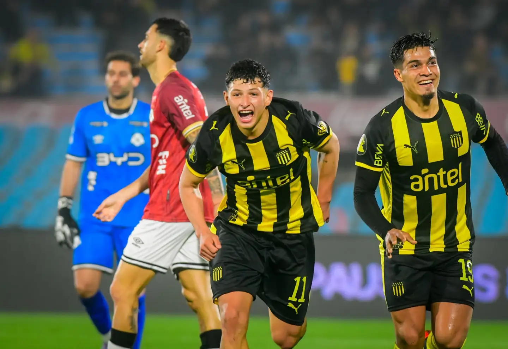

Partido clave
Clausura: Peñarol, con una baja sensible, recibe a Central. Hora, formaciones y cómo verlo
El equipo mirasol buscará aumentar a 11 puntos la ventaja sobre Nacional en la Anual, y el palermitano acercarse a zona de Libertadores.
Fútbol uruguayo · 16 de agosto de 2026

Peñarol recibirá a Central Español en el estadio Campeón del Siglo por la segunda fecha del Torneo Clausura. El partido comenzará a las 18:30 horas y cerrará la jornada del campeonato.
El equipo aurinegro buscará sumar tres puntos importantes para mantenerse en la pelea por los primeros lugares y recuperar el liderazgo de la tabla Anual.
Peñarol pretenderá un triunfo que le permita llegar a 46 unidades en la tabla acumulada y sacarle 11 de ventaja a su rival de todas las horas, diferencia que podría aumentarse a 14 puntos en caso de vencer a los ciudadanos cuando se juegue el partido pendiente.
Diego Aguirre no podrá contar con Nahuel Herrera por su lesión en el quinto metatarsiano del pie, y a esa baja se sumó la de Thiago Espinosa a último momento por una sobrecarga muscular. Franco Romero, que arrastra un desgarro, tampoco estará a la orden, así como tampoco Jesús Trindade. Por otra parte, la Fiera recuperará a Maximiliano Olivera y le dará ingreso en una zaga de tres jugadores.
Leonel Jaime aparece entre las opciones ofensivas del plantel después de sus últimas actuaciones. El futbolista buscará aprovechar una nueva oportunidad y aportar velocidad al ataque aurinegro.
Central Español intentará dificultar la salida de Peñarol y aprovechar los espacios que pueda dejar el equipo local. El encuentro será importante para los objetivos de ambos clubes dentro del Torneo Clausura.
Del otro lado está Central, que llega tras derrotar 1-0 a Progreso en el Parque Palermo y cortar una racha de cuatro partidos sin ganar. Los palermitanos, de gran campaña, quieren acercarse a los puestos de Copa Libertadores.
Esteban Guerra impartirá justicia como árbitro principal junto a los asistentes Martín Soppi y Alberto Píriz, mientras que Pablo Silveira será el cuarto juez. Jonathan Fuentes y Marcelo Alonso estarán en el VAR.